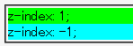
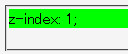
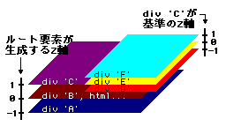

z-indexプロパティが指定された要素を祖先に持たない要素のz-indexプロパティに負の値を指定すると、その要素が描画されない。
<div style="position:relative; background:lime; z-index:1;">z-index: 1;</div> <div style="position:relative; background:aqua; z-index:-1;">z-index: -1;</div>
正の値と負の値を指定した状態の比較です。
WinIE6.0での表示（標準モード）
Moz1.0.1での表示（標準モード）
Moz/N6/N7のこのような挙動は、仕様上正しいものです。
祖先にz-indexが指定された要素を持たない要素は、ルート要素（html要素）が生成したZ軸を用いて上下関係を決めます。また、この軸上でのルート要素のz-indexの初期値は0です。そのため、z-indexに負の値を指定した要素はhtml要素の下に回ってしまい、見えなくなってしまいます。
これに対処するには、祖先にz-indexプロパティが指定された要素を置くことです。z-indexプロパティが指定された要素は子孫要素のために、自分を基準にしたZ軸を生成します。このZ軸はルート要素が生成したZ軸とは干渉しないので、z-indexプロパティに負の値を設定しても表示されるようになります。
<div style="position:absolute; z-index:-1; background:navy;">A</div> <div style="position:absolute; z-index:0; background:maroon;">B</div> <div style="position:absolute; z-index:1; background:purple;">C <div style="position:absolute; z-index:-1; background:red;">D</div> <div style="position:absolute; z-index:0; background:yellow;">E</div> <div style="position:absolute; z-index:1; background:aqua;">F</div> </div>
div要素Cの子要素であるD, E, Fの各div要素は、div要素Cが生成したZ軸上で上下関係を決めます。このZ軸ではdiv要素Cが0になるので、それよりz-indexの値が低いdiv要素Dはdiv要素Cより下層に配置されます。ただし、div要素Cが属するZ軸でより下層にある要素（ここではhtml要素も含まれる）よりは上層に配置されます。
一方、祖先にz-indexを指定した要素を持たないdiv要素Aは、ルート要素（html要素）が生成したZ軸上で上下関係を決めます。その結果、div要素Aはルート要素よりも下層に回ってしまうために見えなくなります。

具体的な対処法は、スタイルシートに以下の記述を加えることです。
body {
position: relative;
left: 0;
top: 0;
z-index: 0;
}
Moz1.0.1/N7ではCSS仕様に沿った実装をしています。